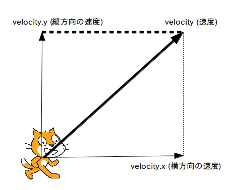
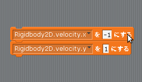
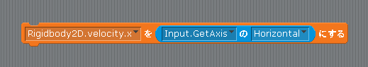

Scratch is developed by the Lifelong Kindergarten Group at the MIT Media Lab. See http://scratch.mit.edu
左右に動かす
このページでは自キャラである Cat をキーボードを使って左右に動かしてみましょう。
自キャラだけに限らず、Unity2Dのゲームオブジェクトを画面上で上下左右に動かすためには「Rigidbody2D」コンポーネントをアタッチしてから「velocity」プロパティに値を入れます。
この Rigidbody2D コンポーネントの velocity プロパティは日本語では「速度」を意味する2次元ベクトルで、「velocity」で指定した方向と速さでゲームオブジェクトが動きます(図1)。
また velocity は更に「velocity.x」と「velocity.y」というプロパティに分かれていて、velocity.x は横方向の速度、velocity.y は縦方向の速度になります。
図1: Rigidbody2D コンポーネント の velociy (速度) プロパティは 2 次元ベクトル

例えば Cat の「Start」イベントか「Update」イベントの中で図2の様なスクリプトを作成すると Cat は左上に移動し始めます。
図2: 左上に移動するスクリプト

さらに今回はキーボードの左右で Cat を動かしますので、「Input」クラスも使います。
この「Input」クラスには「GetAxis」というメソッドが用意されていて、パラメータに"Horizontal"を指定することで、左キーを押すと -1、右キーを押すと +1 という数字が得られます。
例えば Cat の「Update」イベントの中で図3の様なスクリプトを作成すると、左キーを押すと Rigidbody2D.velocity.x に -1 が入るので左に、右キーを押すと 1 が入るので右に動きます。
図3: 左右入力+移動のスクリプト
